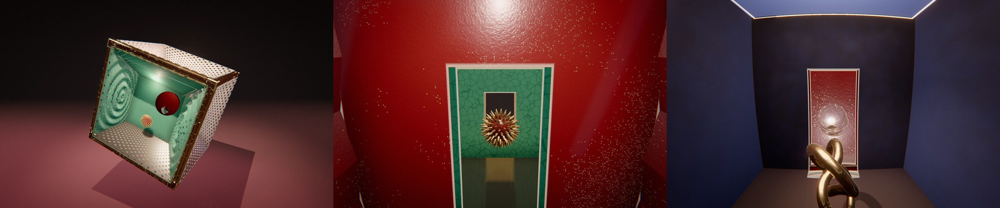

01Ce que montre la scène
README.md · src/math4.jsL'hypercube, ou tesseract, est au cube ce que le cube est au carré. Un carré a quatre côtés, un cube six faces carrées, et un tesseract huit « faces » cubiques, qu'on appelle ses cellules. On ne peut pas le voir directement, mais on peut le projeter en trois dimensions, comme une photographie projette un cube sur un plan.
Dans la scène, chaque cellule est une vitrine : une ossature de barres, six parois et un objet exposé au centre. Quatre cellules forment la galerie que l'on visite. Chacune a sa matière et sa couleur, les mêmes dehors et dedans : laque vermillon, émail vert, laque ocre, velours bleu nuit. Les quatre autres sont en biscuit clair. Une boucle de l'animation se déroule ainsi :
- les huit cellules sont posées à plat en patron, puis se replient en hypercube ;
- la caméra entre dans le cube du centre, et l'espace se referme autour d'elle ;
- l'hypercube fait quatre quarts de tour dans le même plan ; vue de l'intérieur, chacun fait passer d'une pièce à la suivante, toujours tout droit ;
- la caméra ressort et le patron se déplie, exactement comme au départ.
La page suit l'ordre de la construction. On commence par la projection, qui permet de voir un objet à quatre dimensions (section 02). On s'en sert pour plier le patron (section 03), puis pour faire tourner l'hypercube sans que la boucle ait besoin de raccord (section 04). La section 05 montre comment la même projection devient le point de vue d'un habitant de cet espace, et la section 06 comment la caméra y entre sans heurter une barre. Les quatre suivantes traitent de ce qu'on voit : des parois qui s'ouvrent selon leur position en quatre dimensions (section 07), les portes de la galerie (section 08), une lampe dosée pièce par pièce (section 09) et la lumière que les murs et le sol se renvoient (section 10).
02Voir un objet à quatre dimensions
src/math4.js · project() · src/scene/project.js · projectWithJacobian()En coordonnées, le tesseract est l'ensemble des points (x, y, z, w) dont les quatre coordonnées sont entre −1 et 1. Ses huit cellules sont les cubes où l'une des coordonnées vaut −1 ou +1. On les nomme par leur normale, la direction qui sort de chaque cube : −X, +X, −Y, +Y, −Z, +Z, −W et +W. Deux cellules partagent une face carrée, sauf si elles sont opposées.
Chaque pièce de la scène (barres, panneaux, verre, objet exposé) est construite une seule fois, en trois dimensions, dans le repère de sa cellule. Une matrice 4 × 4, recalculée à chaque image, la place ensuite dans l'espace à quatre dimensions : elle combine la position de la cellule dans l'hypercube, le dépliage du patron, la rotation 4D et la rotation de l'objet exposé.
La règle la plus simple : une perspective
Pour dessiner un cube sur un plan, on le regarde depuis un œil placé devant lui : un point est d'autant plus grand qu'il est proche de l'œil. On fait la même chose une dimension plus haut. L'œil 4D est placé sur l'axe w, au point (0, 0, 0, d), et chaque point est ramené en trois dimensions en multipliant (x, y, z) par d / (d − w). La cellule −W, la plus loin de l'œil, apparaît petite au centre ; la cellule +W, la plus proche, l'entoure. On voit un cube dans un cube, reliés par six cellules déformées.
La scène ajoute une étape facultative, le gonflement. Avant la perspective, chaque point est poussé vers la sphère de rayon 2 en quatre dimensions (la 3-sphère), d'une part g du chemin. À g = 0, les arêtes restent droites ; à g = 1, elles deviennent des arcs. En résumé, pour un point local l d'une pièce et A la matrice de sa cellule :
y est le point en quatre dimensions, |y| sa distance à l'origine, y′ le point gonflé et p le point projeté en trois dimensions. d, la distance de l'œil 4D, est tirée entre 2,6 et 3,6 ; g vaut 0, ou une valeur entre 0,4 et 1 pour trois graines sur dix. Le dénominateur est borné à 0,05 : une cellule qui passe tout près de l'œil grandit beaucoup, mais sa taille reste finie. Ce calcul est fait pour chaque sommet dans le vertex shader, le programme que la carte graphique exécute pour chaque sommet du maillage.
math4.js (le même calcul que le shader), arêtes subdivisées en douze. Réglez le gonflement, la distance de l'œil et la rotation dans le plan x–w. La couleur des arêtes est leur coordonnée w : froide loin de l'œil 4D, chaude tout près. Les cellules projetées en miroir sont en pointillé. Faites glisser pour tourner la vue.Ce qui ne va pas : les normales
Pour éclairer une surface, il faut sa normale, la direction perpendiculaire à la surface en chaque point. Une projection non linéaire déforme les surfaces, et une normale ne se transporte pas comme une position. Estimer la déformation par différences finies obligerait à projeter trois points voisins de plus par sommet, et, en nombres à virgule de 32 bits, la précision s'effondrerait près de l'œil 4D, là où d − w devient petit.
Le programme calcule donc la déformation exactement. La jacobienne J = ∂p/∂l est la matrice qui dit comment un petit déplacement dans la pièce devient un petit déplacement après projection. Ses trois colonnes jx, jy, jz s'écrivent en forme fermée, pour a l'image d'un axe local par A. La normale déformée s'obtient ensuite par la matrice des cofacteurs de J, qui garde la normale perpendiculaire à la surface déformée :
n est la normale dans le repère de la pièce et n′ la normale après projection. Le signe du déterminant de J est laissé tel quel. Une cellule dont le déterminant est négatif se projette en miroir : ses triangles changent de sens d'enroulement, et le matériau double face retourne la normale une seconde fois. La normale sort donc toujours de la matière.
- Mettez le gonflement à 0 : les arêtes sont droites, et l'on voit un cube dans un cube. Montez-le à 1 : les arêtes deviennent des arcs.
- Le bandeau compare la jacobienne en forme fermée à des différences finies calculées en double précision : l'écart reste entre 10⁻¹¹ et 6·10⁻¹⁰ pour tous les réglages essayés.
- À rotation nulle, trois cellules (−X, +Y, −Z) sont déjà en miroir, parce que leur repère local est orienté à l'envers. Tournez de 45° dans le plan x–w : +X s'y ajoute. Avec d = 2,2 et g = 1, c'est +W qui s'y ajoute.
Pour aller plus loin
La forme fermée coûte moins que les différences finies, et un test la compare à celles-ci. La même jacobienne donne la tangente (pour l'anisotropie des métaux brossés) et l'échelle locale |det J|1/3, qui règle le relief des motifs. La position de l'image précédente, projetée avec les paramètres précédents, donne les vecteurs vitesse (le déplacement de chaque pixel d'une image à l'autre, dont se servent le flou de mouvement et l'anticrénelage temporel). La carte d'ombre reçoit la même déformation.
Les varyings sont les valeurs que le vertex shader transmet, interpolées, au fragment shader qui colore chaque pixel. WebGPU accorde seize entrées au fragment shader, le sens de la face compris, soit quinze varyings. Au-delà, le pipeline n'est pas créé et la pièce disparaît de l'image, ne laissant que son ombre. Un panneau anisotrope en consomme déjà onze hors de la projection, douze avec les motifs à traits fins. L'ajourage tient donc dans un seul vec3 (position dans la trame et ouverture). Le trou de passage de la caméra (section 06) relit la position projetée, que les vecteurs vitesse font déjà interpoler. La profondeur 4D n'est interpolée que pour l'ossature, qui la lit. Un panneau en consomme ainsi quatorze au plus.
03Un patron est un arbre de charnières
src/math4.js · hinge(), unfoldTransforms(), validNet()Un cube se déplie en six carrés posés à plat : c'est son patron. Le tesseract se déplie de même en huit cubes posés dans l'espace. Déplier, c'est faire pivoter chaque cellule autour de la face carrée qu'elle partage avec sa voisine, comme on ouvre un couvercle sur sa charnière.
Un patron est donc un réseau de charnières qui relie les huit cellules sans former de boucle, ce qu'on appelle un arbre couvrant. Sa racine est le socle, la cellule −W, qui ne bouge pas. Chaque autre cellule a un parent, la cellule à laquelle elle est attachée. Une charnière entre un parent p et une cellule c est une rotation dans le plan de leurs deux normales, autour du centre de leur face commune. La position d'une cellule est celle de son parent, suivie de sa propre charnière :
h = np + nc est le centre de la face commune, Rθ la rotation d'angle θ qui porte −np vers nc, Hp,c la charnière et Tc la transformation complète de la cellule c. À θ = 0, la cellule est à sa place dans l'hypercube. À θ = π/2, elle est couchée dans l'espace de son parent. De proche en proche, toutes les cellules finissent dans l'hyperplan w = −1, où la projection de la section 02 se réduit à un changement d'échelle : on voit huit cubes posés à plat.
hinge, unfoldTransforms, randomNet et project sont importées telles quelles de math4.js. Réglez l'angle θ des charnières, et tirez un autre patron avec les boutons. En or, le socle −W. Faites glisser pour tourner la vue.Ce qui ne va pas : deux cellules au même endroit
Tous les arbres ne sont pas des patrons. Une fois dépliées, deux cellules peuvent tomber au même endroit. Un patron tiré au hasard (en croix autour du socle, en serpent, ou libre) est donc vérifié : on le déplie, on arrondit les centres des cellules, on refuse tout doublon et tout centre hors de w = −1, et l'on recommence le tirage, jusqu'à 500 fois. Il existe 261 patrons du tesseract à symétrie près. La croix du Corpus Hypercubus de Dalí en est un, codé à part.
Par défaut, la scène ne tire pas son patron : elle le construit pour qu'on y reconnaisse la galerie avant d'y entrer. Les quatre pièces visitées forment une rangée, dans l'ordre où on les traverse. Les quatre autres cellules s'accrochent au-dessus, au-dessous et derrière cette rangée, aucune devant, où elle la cacherait à la caméra. Les patrons tirés au hasard servent à l'intérieur classique (paramètre ?interior=classic).
- Faites glisser θ de 0° à 90° : à 0°, le bandeau indique « plié » ; à 90°, « à plat, w = −1 ».
- Le patron de Dalí a une profondeur de 2 (aucune cellule n'est à plus de deux charnières du socle). Tirez des serpents : sur 200 tirages, 156 ont une profondeur de 5 à 7.
Pour aller plus loin
Dans la démo, toutes les charnières ont le même angle. Dans la scène, elles se ferment tour à tour, les feuilles de l'arbre d'abord, avec de l'anticipation et du rebond : le mouvement recule un peu avant de partir, et dépasse un peu avant de se poser. Pour l'intérieur classique, la recette tire la croix de Dalí, une croix, un serpent ou un patron libre, avec des poids 2,5, 1,5, 1 et 2.
04La boucle se referme par construction
src/math4.js · moveMatrix(), randomMoves(), randomTour()Une fois plié, l'hypercube tourne d'un quart de tour dans un plan qui contient la direction w. La cellule la plus éloignée de l'œil 4D, le cube du centre de l'image, passe sur le côté, et une voisine prend sa place. Ce mouvement peut être doublé d'un quart de tour simultané dans le plan perpendiculaire (une rotation dite isocline), ce qui ajoute un roulis. Cela fait dix-huit mouvements, six simples et douze doubles.
Chacun de ces mouvements est une symétrie de l'hypercube : après un quart de tour, l'hypercube occupe exactement la même place, seules les cellules ont changé d'emplacement. Sa matrice ne contient que des 0 et un seul ±1 par ligne (une permutation signée), ce qu'un test vérifie. On peut donc déplier l'hypercube selon le même patron, aux mêmes emplacements, garni d'autres cellules. L'emplacement de la cellule c est Q nc, où Q est le produit des mouvements déjà faits. Il suffit que la suite de mouvements ait pour produit l'identité pour que chaque cellule ait retrouvé sa place à la fin, sans aucun raccord :
gk est la matrice du mouvement k, Qk l'orientation de l'hypercube avant ce mouvement, et I l'identité. La cellule du centre se lit directement sur Q : c'est celle dont la normale va vers −ew, soit nc = Q⊤(−ew), l'opposée de la dernière ligne de Q.
Par défaut, la séquence répète quatre fois le même quart de tour, dans le plan des axes x et w (son sens est tiré de la graine). Le cube du centre passe par quatre cellules alignées sur un même grand cercle de l'hypersphère, et le quatrième quart de tour ramène la première : c'est une ligne droite qui se referme. Aucun des quatre mouvements ne touche aux axes y et z. La section 05 s'en sert pour donner un haut à l'intérieur.
L'intérieur classique (paramètre ?interior=classic) tire d'autres boucles. Le tour de quatre pièces est fait de quatre mouvements qui font passer le cube du centre par quatre cellules distinctes, une fois chacune, avant de revenir à la première. Une recherche en profondeur le trouve. Elle essaie les mouvements dans un ordre tiré de la graine, interdit les cellules déjà visitées et exige que le dernier mouvement soit l'inverse exact du produit des précédents (budget : 50 000 essais). Le tour complet fait de même avec huit mouvements et les huit cellules.
randomMoves (importée de math4.js, avec le générateur de la scène). Chaque étape tient un instant puis tourne. Les boutons tirent une boucle de quatre pièces, une ligne droite dans un seul plan (la boucle de la scène), le tour complet ou une autre graine ; le curseur parcourt la boucle quand la lecture est arrêtée. La couleur des arêtes est leur coordonnée w. Le cube du centre est tracé en trait épais. Le bandeau du bas suit la pièce occupée. Ici la boucle reste pliée ; dans la scène, chaque étape déplie et replie le patron.- Lisez le bandeau du bas : quelle que soit la séquence tirée, la dernière flèche ramène à −W, la pièce de départ, et le bandeau du haut indique « produit = identité ».
- « Un seul plan » répète quatre fois le même quart de tour : le cube du centre passe par −W, une voisine, +W, puis l'opposée de la voisine. C'est une ligne droite : quatre pièces sur le même grand cercle. La scène fait ce tour par défaut.
- « Tour complet » enchaîne huit mouvements et passe par les huit cellules.
Pour aller plus loin
Dans l'intérieur classique, sur 1 000 graines de la recette, 517 tirent elles aussi une ligne droite (la recette n'autorise les mouvements doubles que six fois sur dix, ce qui favorise les lignes droites). Dans la scène, chaque étape suit le même déroulé : pause dépliée, pliage échelonné, pause, rotation, pause, dépliage.
Plié, chaque arête de l'hypercube est partagée par trois cellules et chaque sommet par quatre : huit ossatures complètes s'y empileraient. À la fin du pliage, seule la cellule extérieure, projetée en cube sans déformation, garde ses barres. Celles des autres se rétractent dans leurs axes, commandées par une seule valeur transmise au shader (un uniform). Pendant un quart de tour, le contour passe d'une cellule à l'autre.
05L'œil sur l'hypersphère : la projection comme point de vue
src/math4.js · voyageStateAt() · src/scene/voyage.js · voyageBlend()Gonflé jusqu'au bout (g = 1), le tesseract est la 3-sphère de rayon 2, pavée par ses huit cellules. Si l'on pose en plus l'œil 4D sur cette sphère (d = 2), la perspective devient une projection stéréographique. Elle envoie le pôle opposé à l'œil, le centre du cube du centre, à l'origine, et les grands cercles qui passent par ce pôle sur des droites issues de l'origine. Une caméra posée à l'origine voit donc chaque point de l'hypersphère dans sa vraie direction, comme le verrait un habitant de cet univers.
L'intérieur n'a pas de moteur de rendu à part : seuls deux réglages bougent, g → 1 et d → 2. Le mouvement de la boucle change alors de sens pour le spectateur. Un quart de tour dans un plan qui contient w déplace l'univers le long d'un grand cercle passant par la caméra. Vue du centre, la pièce voisine arrive en ligne droite, traverse la paroi commune et se pose autour de la caméra. L'univers compte huit pièces, chacune accolée à six autres. La séquence de la section 04 a pour produit l'identité, et le voyage revient donc à son point de départ.
- Ramenez « Œil sur la sphère » à 0 : on voit le cube de dehors, et la face +Z, la plus proche de l'œil, recouvre toutes les autres. Remontez-le à 1 : les six faces se répartissent autour de l'habitant sans se recouvrir.
- Œil sur la sphère, faites glisser « Traversée » de 0° à 90° : la pièce voisine glisse en ligne droite jusqu'au centre, et le panneau de droite passe de −Z à +X.
L'ordre des deux réglages compte. Vu du dehors, le gonflement complet donne une boule bosselée et percée, illisible. La plongée entre donc d'abord dans le tesseract plié, un cube dans un cube, jusqu'au cube du centre (62 % de sa durée), et l'espace ne se referme qu'ensuite, autour de la pièce où l'on se tient. La remontée fait l'inverse.

Une galerie en ligne droite
Les quatre quarts de tour de la boucle se font dans le même plan (section 04). Vue du centre, chaque pièce arrive donc de la même direction, et la caméra n'a pas à bouger : elle garde une seule pose pendant tout le voyage, et ce sont les pièces qui viennent à elle. Elle se tient dans l'axe des portes, en retrait de 0,64 par rapport au centre de la pièce et à 0,16 au-dessus de lui (dans le repère projeté, la paroi du fond est à 0,83 du centre). Elle regarde le long de l'axe, un peu vers le bas. L'objet de la pièce flotte sous le centre, à 0,3 demi-côté, pour ne pas cacher les portes.
Les mêmes quarts de tour laissent en place les axes y et z. L'axe y sert de haut, le même dans les quatre pièces. Dans chaque cellule, la face tournée vers −y est un sol, et le reste pendant toute la boucle. Les deux faces tournées vers ±z sont les murs de côté, qui portent le relief de la pièce. Les deux dernières, sur l'axe du voyage, sont percées d'une porte (section 08).
Dans cette pose, le regard suit le grand cercle du voyage. Il passe la porte d'en face, traverse la pièce suivante, passe une deuxième porte et finit dans la troisième pièce. Le centre de cette pièce est l'antipode de la caméra, que la projection envoie à l'infini. Un regard droit devant ne revient donc pas par-derrière : la quatrième pièce est dans le dos de la caméra.
Une traversée dure 5,2 s et une halte 2,2 s, à un facteur près, tiré pour chaque étape entre 0,75 et 1,3. L'angle du quart de tour suit un profil en trapèze : la rotation prend son élan, garde une vitesse constante, puis freine.
f est l'avancement de la traversée, de 0 à 1, et τ la part du quart de tour accomplie. L'élan et le freinage occupent chacun 28 % de la durée. Entre les deux, pendant 44 % de la durée, la vitesse vaut 1/(1 − a) ≈ 1,39 fois la vitesse moyenne, et c'est à cette vitesse constante que la porte est franchie.
La plongée (section 06) arrive dans la première pièce de biais. Pendant la première halte, la caméra rejoint la pose de la galerie en tournant autour du centre de la pièce, ce qui lui évite de passer au travers de l'objet. La dernière halte fait le chemin inverse avant la remontée.
Pour aller plus loin : la caméra de l'intérieur classique
Dans l'intérieur classique, la boucle n'est pas toujours une ligne droite, et rien ne désigne un haut. Chaque traversée a son allure (droit devant, à reculons, de côté, en tonneau, en spirale), jamais deux fois la même de suite, et une diagonale de porte choisie parmi quatre, le plus loin possible des barres. Chaque traversée est choisie pour commencer près de là où la précédente a fini, si bien que la halte qui les sépare n'a pas à se retourner. Comme l'hypersphère n'a pas de haut, le roulis est porté d'une traversée à l'autre et ne se défait qu'une fois, avant la remontée.
Par-dessus, la pose est lissée par un noyau gaussien, une moyenne des poses voisines pondérée en cloche (σ ≈ 0,3 s, neuf échantillons de −2σ à 2σ). Ce lissage est calculé sur la trajectoire elle-même, sans historique : la boucle se referme et l'export rend la même chose. Le regard tourne en moyenne à moins de 30°/s dans les pièces.
06Entrer sans heurter une barre
src/scene/voyage.js · entryAxis(), dockPose()Pour plonger, la caméra doit aller de l'extérieur jusqu'au centre du cube du centre. Sur son chemin se trouvent des barres et des objets exposés, et la projection change pendant le trajet. Une solution directe serait de tester chaque image contre une géométrie qui se déforme, ce qui coûte cher et peut rater un contact entre deux images.
Une remarque évite ce test. Les deux temps de la projection ne font que multiplier (x, y, z) par un nombre positif (k > 0 et s > 0). La direction d'un point du tesseract, vue de l'origine, ne dépend donc que de ce point, pas de g ni de d. Or chaque arête de l'hypercube a trois coordonnées à ±1, donc au moins deux de x, y, z de même valeur absolue, et ce sont les plus grandes. Chaque objet exposé, lui, est sur un axe. Un rayon issu de l'origine dans la direction (1 ; 0,38 ; 0,38), ou l'une de ses images par symétrie, n'a aucune paire de coordonnées dominantes égales : il ne croise aucune barre, quelle que soit la projection, et il passe loin des objets.
project, puis réduites à leur direction. Le point d'or est le rayon d'entrée (glissez-le) ; les quatre losanges sont ses images par symétrie. Le bandeau donne l'écart angulaire aux barres et aux axes des objets. Les barres ont une épaisseur, que la démo ignore.- Changez g et d dans toute leur plage : les arêtes ne bougent pas, et les écarts restent à 22,7° des barres et 28,3° des objets.
- Glissez le point d'or vers le centre du carré : l'écart aux objets tombe à 4° près de l'axe. Glissez-le sur la diagonale, en (1 ; 1 ; 1) : il est sur une arête, à 0° des barres.
La caméra rejoint ce rayon en glissant sur une sphère qui englobe tout (de rayon 6 au moins), puis le descend jusqu'à 0,6 du centre, entre l'objet et la paroi. Sa distance au centre décroît d'un même pourcentage par unité de temps :
ρ est la distance au centre, R0 le rayon de départ et b l'avancement de la descente, de 0 à 1. Les deux gestes se chevauchent, ce qui évite un virage sec. Les parois qu'elle franchit sont percées d'un passage rond et net, centré sur ce rayon et un peu plus large au loin, où les pièces sont projetées plus grandes. Il s'ouvre devant elle et se referme derrière. Arrivée à 0,6 du centre, la caméra rejoint la pose de la galerie pendant la première halte (section 05).
07Ajourer les parois selon leur profondeur 4D
src/scene/reveal.js · computeOpenings() · src/scene/project.js · revealMask()Plié, le tesseract est enveloppé par sa cellule extérieure et par les faces latérales qui la touchent : elles cachent tout le reste. La scène les garde et les perce de trous. Chaque face s'ouvre selon la coordonnée w de son centre, qui mesure sa proximité de l'œil 4D, par une rampe douce de 0 à 1 :
La fonction smoothstep vaut 0 sous −0,5, 1 au-dessus de 0,85, et passe de l'un à l'autre sans à-coup. La coque tournée vers l'œil s'efface, les faces latérales (w ≈ 0) s'ajourent en partie, et le cube du centre (w = −1) reste plein. Tout se referme quand les cellules reviennent se coucher dans le patron. Le trou lui-même est dessiné pixel par pixel, par le fragment shader : des disques sur une trame à 45°, de rayon 0,78 fois l'ouverture (au-delà de √2/2, la face a disparu).
Ce qui ne va pas : un bord qui scintille
Avec un seuil franc (le pixel est plein si la paroi le couvre à plus de moitié), le bord des trous crénelle dès que la paroi bouge, c'est-à-dire tout le temps. Le bord est donc tramé sur la largeur d'un pixel : la couverture lissée est comparée à un bruit en gradient entrelacé (un motif pseudo-aléatoire peu coûteux, réparti sans amas), décalé à chaque image de 5,588238 pixels, ce qui fait seize décalages. L'anticrénelage temporel, qui moyenne les images successives, fond ce bruit en un bord net.
const shift = vec2(frameId.toFloat().mod(16).mul(5.588238));
const ign = interleavedGradientNoise(screenCoordinate.xy.add(shift));
const noise = mix(float(0.5), ign, G.dither);
return cover.greaterThan(noise);revealMask. Le curseur règle w, d'où l'ouverture vient par la formule ci-dessus, et les boutons changent le mode de bord. « Tramé + anticrénelage temporel » montre la moyenne des seize décalages, ce vers quoi converge l'historique pour une paroi immobile ; la vraie chaîne reprojette l'historique et le mélange image après image.- Faites glisser w : la paroi reste pleine jusqu'à −0,5, s'ouvre à 0,31 pour w = 0 (trous de rayon 0,24 carreau), et disparaît vers w = 0,7, quand le rayon dépasse √2/2.
- En « Seuil franc », les trous ont des bords en escalier qui changent de forme pendant que la paroi glisse. En « Tramé, une image », le bord devient un semis de pixels. Avec l'anticrénelage temporel, ce semis se fond en un bord lisse.
Pour aller plus loin
S'ajoutent à cette règle une coupe côté caméra (les panneaux tournés vers elle s'ajourent aussi), le passage de l'entrée et les portes du voyage. Chaque face prend la plus grande des ouvertures que ces règles lui donnent. L'ouverture est constante sur une face : elle est calculée en JavaScript, une fois par face et par image, soit 48 valeurs, que le vertex shader lit selon la face à laquelle chaque pièce est rattachée. Dans la galerie, les parois restent pleines : pendant la plongée, les bornes de la rampe glissent de −0,5 et 0,85 vers 1,12 et 1,3. Seule s'efface la paroi qui passe par l'œil 4D au milieu d'une traversée. Projetée à l'infini, elle couvrirait l'écran d'un aplat. Dans l'intérieur classique, les bornes glissent vers 0,1 et 1,85, et les parois lointaines s'ajourent.
Une seconde trame de trous percée par-dessus celle d'une tôle perforée dessinerait du moiré. Sur ces faces, la trame de l'ajourage est remplacée par celle de la tôle (nombre de trous par côté et demi-côté de la paroi, transmis avec l'ouverture), et ce sont ses trous qui s'agrandissent.
08Les portes
src/scene/project.js · irisEdge(), doorGlow() · src/scene/reveal.js · voyageDoors()Dans la galerie, la paroi entre deux pièces voisines est percée d'une porte. La dissoudre par la trame de trous de la section 07 se lirait comme un effet de dissolution plutôt que comme un passage. La porte est donc une découpe nette : un rectangle debout, dont le pied touche presque le sol, bordé d'une lisière lumineuse. Les quatre portes du grand cercle restent ouvertes pendant tout le voyage. On voit ainsi la pièce suivante avant d'y entrer.
Tout est calculé dans la position projetée, sans varying de plus. Le JavaScript fournit, pour chaque porte, son centre projeté, sa normale, deux axes de son plan (le second pointe vers le haut de la galerie) et sa demi-hauteur. Une même expression à trois termes décrit le rectangle de la galerie et l'octogone de l'intérieur classique. Elle est négative dans l'ouverture et positive sur la paroi :
q est la position du point par rapport au centre de la porte, u et v les deux axes de son plan, R sa demi-hauteur et δ l'écart à son bord. Pour la porte de la galerie, a = 0,62/0,3 ≈ 2,07 et c = 0 : la demi-largeur vaut R/a. Grande ouverte, la porte a une demi-hauteur de 0,62 demi-côté de paroi et une demi-largeur de 0,3. Son pied est à 0,92 demi-côté sous le centre de la paroi, et son linteau aux deux tiers de la hauteur. La lisière est un filet smoothstep(0,04R ; 0,008R ; δ) côté paroi, ajouté à la lumière émise.
Ce qui ne va pas : des portes lointaines aussi grandes que les proches
Vues du centre d'une pièce, la porte d'en face et la suivante sont à 45° et à 135° sur le grand cercle, et la projection leur donne la même taille apparente. Leurs cadres se confondent au lieu de s'emboîter. Une porte est donc rétrécie selon la coordonnée w du centre de sa paroi, c'est-à-dire selon son éloignement :
h est le demi-côté de la paroi. La porte de la pièce où l'on se tient (w proche de −1) garde sa taille. Celle d'une paroi proche de l'œil 4D, la plus lointaine pour la caméra, est réduite à 40 %. Le pied de la porte ne bouge pas : elle rétrécit vers le sol.
irisEdge, doorGlow et voyageDoors, dans le plan de la paroi ; derrière, la pièce suivante est esquissée. Les boutons montrent la porte droite de la galerie, l'iris de l'intérieur classique et, pour comparaison, l'ouverture par la trame de trous de l'ajourage. Le curseur w n'agit que sur la porte droite.- Porte droite, ouverture à 100 %, w = −1 : la demi-hauteur vaut 0,62 demi-côté et la demi-largeur 0,30. Glissez w vers 1 : à w = 0, elles valent 0,43 et 0,21 ; au-delà de 0,7, elles valent 0,25 et 0,12, et le pied de la porte est resté au même endroit.
- Ramenez l'ouverture vers 0 : la porte se referme vers le sol. C'est ainsi qu'elle s'ouvre pendant la première halte.
- « Iris » : l'ouverture devient un octogone (a = c = 1) qui tourne en s'ouvrant. À 55 %, son rayon vaut 0,46 demi-côté et ses lames sont tournées de 0,38 rad.
- « Trame de trous », à la même ouverture : la paroi devient une grille de trous, et l'on ne voit plus de seuil à franchir.
Pour aller plus loin
Un garde |q · n| < 0,55 R limite la découpe au voisinage du plan de la porte : seuls les deux panneaux dos à dos de la paroi sont percés, ensemble. La carte d'ombre et la sonde de pièce voient la même ouverture. Les portes de la galerie s'ouvrent pendant la première halte (entre 15 % et 60 % de sa durée) et se referment pendant la dernière (entre 40 % et 85 %).
Dans l'intérieur classique, la porte est un iris, un octogone qui tourne en s'ouvrant comme le diaphragme d'un objectif. Son rayon vaut 0,8 fois le demi-côté de la paroi, multiplié par l'ouverture lissée, et ses lames tournent de 0,9 × (1 − ouverture) radian. Les axes u et v sont tournés de cet angle en JavaScript, ce qui évite toute trigonométrie dans le shader. La porte d'arrivée se referme pendant le premier tiers de la halte, et la suivante s'ouvre sur sa seconde moitié.
09Une lampe par pièce, dosée selon ses murs
src/scene/dose.js · roomGain() · src/scene/practicals.js · src/scene/probe.jsUne fois la caméra entrée, le sol de la scène (le plateau) s'éloigne et ses contre-jours s'éteignent. Chaque pièce est alors éclairée par sa propre lampe, accrochée à son plafond, la face tournée vers le haut de la galerie. Le projecteur, seul à porter une ombre, est décalé de côté par rapport à la caméra : placé dans son axe, il cacherait l'ombre derrière l'objet. Son faisceau est serré (0,62 rad), si bien que l'objet et le sol sont en pleine lumière et que les murs s'éclairent en dégradé. Il glisse d'un plafond à l'autre pendant une traversée. Une gorge lumineuse court au pourtour du plafond.
Ce qui ne va pas : des pièces brûlées ou noires
Avec la même lampe partout, l'écart entre les pièces dépasserait deux ordres de grandeur. Une pièce de marbre blanc serait brûlée (parois à 4 à 7 au posemètre pour un blanc à 1), une pièce de laque sombre resterait dans le noir. L'exposition de l'image reste fixe, pour que le film reste une boucle exacte. La lampe de chaque pièce est donc dosée d'après la luminance linéaire L de sa doublure, le revêtement intérieur de ses parois. Pour un métal, qui ne diffuse rien, on compte la moitié de la luminance de sa couleur. Le gain baisse quand la doublure est claire, entre deux bornes :
L va de 0 (noir) à 1 (blanc), et le gain multiplie la puissance de la lampe. Le produit L · gain est ce que renvoient les parois. Comme il croît encore avec L, le rendu ne s'égalise pas tout à fait, et une pièce claire reste claire.
roomGain est importée de dose.js et appliquée aux finitions réelles du catalogue (finishes.js, verres exclus), un point par finition. À droite, la paroi choisie sous la même lampe partout, puis sous sa lampe dosée, avec une exposition fixe calée sur un gris moyen. Les nuanciers ne montrent que la couleur de base, sans motif ni reflet.- Marbre de Carrare (L = 0,826) : sous la même lampe, le nuancier est brûlé ; dosé à 0,25, il renvoie 0,208.
- Laque unie (L = 0,027) : le gain atteint sa borne de 2,5 et la paroi renvoie 0,067. L'écart avec le marbre passe d'un facteur 31 à un facteur 3.
- Laque urushi (L = 0,0025) : même au gain maximal, elle ne renvoie que 0,006, et la pièce reste sombre.
Pour aller plus loin
La lumière qui met chaque objet en valeur (la lumière de vedette) se règle de même sur la clarté de l'objet (entre 0,3 et 1,5 ; telle quelle pour les métaux et les pierres). Le rebond vient d'une sonde de pièce : une carte cubique de 128 pixels rendue depuis le centre de la pièce, une face toutes les deux images. Son niveau de mipmap le plus flou donne la couleur des murs sur l'objet : il est lu au centre de chacune des six faces de la carte, et les six teintes sont pondérées par le carré de la normale (un cube d'ambiance). Lu directement selon la normale, ce niveau laisse voir les arêtes de la carte, dont les faces ne se raccordent pas. Les autres niveaux, lus selon le reflet et la rugosité, donnent le reflet de la pièce sur les métaux et les vernis. La sonde voit des doublures unies éclairées par les mêmes lampes, à la place des vrais matériaux : la lumière ne rebondit qu'une fois, sans boucle de rétroaction. Dans la galerie, la part de la sonde sur les parois est ramenée à 40 % : elle donne la même lumière à tout un mur, et le rebond de la section 10 la complète point par point.
10Le rebond dans une boîte
src/scene/materials.js · src/scene/tesseract.jsDans une vraie pièce aux murs colorés, le sol n'est pas uniforme. Il prend la teinte du mur près du mur, le bas des murs prend celle du sol, et les angles sont plus sombres. La sonde de la section 09 ne donne qu'une teinte par face : sur les grandes parois unies de la galerie, elle laisse le sol plat.
Une pièce de la galerie est un cube dont on connaît les six faces : cinq de la matière de la pièce, une de sol. Le rebond se calcule donc sans rien mesurer dans l'image. En un point d'une face, chacune des quatre faces perpendiculaires renvoie sa teinte, d'autant plus qu'on en est près, et ferme un peu la lumière dans l'angle :
di est la distance du point au plan de la face i, en demi-côtés de la pièce (0 au pied du mur, 1,86 au pied du mur d'en face), et Ci la teinte de cette face, celle de la pièce ou celle du sol. Le poids de Ci a la forme du facteur de forme d'un mur vu depuis son pied : il vaut 1/2 contre le mur et décroît avec la distance. B, multiplié par la couleur de la paroi et par 1,7, s'ajoute à la lumière qu'elle émet. O multiplie sa couleur et l'assombrit dans les angles. La face d'en face n'est pas comptée.
materials.js, teintes des pièces importées de recipe.js. À gauche, le sol entre ses quatre murs ; à droite, B et O le long de la ligne pointillée. La démo remplace le projecteur par une lumière uniforme et relève l'exposition : elle ne montre que ce que le rebond ajoute.- Coupez « Rebond des murs » : le sol devient gris et uniforme. Rallumez-le : il prend la teinte des murs, surtout à leur pied. Le bandeau donne le poids total des quatre murs : 0,46 au centre, 0,77 au pied d'un mur, 1,08 dans un coin.
- Coupez « Fermeture des angles » : les bords s'éclaircissent. La fermeture vaut 0,93 au centre, 0,56 au pied d'un mur et 0,34 dans un coin.
- Changez de pièce : dans le velours bleu nuit, presque noir, le rebond n'ajoute presque rien, et il ne reste que la fermeture des angles.
Le point est repéré par sa position au repos, dans le repère de sa cellule, avant toute projection : aucun varying de plus n'est nécessaire, et le résultat suit la pièce dans ses déformations. La face où se trouve le point se reconnaît à sa normale géométrique.
Un sol poli qui reflète les portes
Le sol est une pierre sombre et polie (rugosité 0,16, part métallique 0,2). Les reflets en espace écran de la chaîne de rendu n'y rendent presque rien. Le reflet des portes est donc calculé directement. Le rayon de l'œil est réfléchi sur le sol, puis prolongé jusqu'au plan de chaque porte. S'il tombe dans le rectangle, il rapporte la teinte de la pièce d'à côté :
v est la direction du regard, U le haut de la galerie, r le rayon réfléchi, x le point du sol, p le centre de la porte et n sa normale. Le point d'arrivée x + t r est testé contre le rectangle de la section 08. F est un terme de Fresnel : le reflet est faible quand on regarde le sol de haut et fort en vue rasante. Le bord du reflet s'adoucit avec la distance t, comme sur un sol qui n'est pas un miroir parfait.
Pour aller plus loin
Deux termes par pièce complètent le rebond. Un appoint de la teinte de la pièce vaut 0,3 dans les pièces vues par les portes et 0,03 dans celle où l'on se tient : la pièce antipodale, projetée à l'infini, n'a pas de lampe, et resterait noire dans l'encadrement des portes. Une lueur devant chaque porte, sur le sol et le bas des murs, porte la teinte de la pièce voisine (0,9 fois sa couleur, porte grande ouverte). Ces valeurs sont des uniforms par cellule, calculés en JavaScript à chaque image.
La face qui sert de sol est désignée pour chaque cellule pendant toute la boucle, y compris hors du voyage, et seule sa face interne en prend la matière. Désignée seulement à l'entrée de la caméra, elle changerait de matière sous les yeux du spectateur pendant la plongée.
11Récapitulatif
Au chargement, la recette fixe le patron (section 03), la suite de mouvements (section 04) et les matières des quatre pièces, et des Web Workers (des fils de calcul parallèles du navigateur) produisent la géométrie de chaque pièce dans le repère de sa cellule : barres profilées, panneaux, objets.
À chaque image, le JavaScript calcule la phase de la boucle, la matrice 4 × 4 de chaque cellule (dépliage, rotation 4D, objet), les réglages g et d de la projection (sections 02 et 05), la pose de la caméra (sections 05 et 06), les 48 ouvertures des faces et les portes (sections 07 et 08), la lampe de la pièce (section 09) et, pour chaque cellule, son sol, son appoint et la teinte de ses portes (section 10). Le vertex shader porte chaque sommet en quatre dimensions, le projette et calcule sa normale par la jacobienne (section 02). Le fragment shader perce les trous et les portes, éclaire, puis ajoute le rebond et le reflet du sol.
12Budget
La géométrie est produite dans des Web Workers sous l'écran de chargement. Ensuite, chaque image ne calcule en JavaScript que quelques dizaines de matrices et d'ouvertures, et le reste se fait dans les shaders. L'image est limitée par les fragments : le nombre de lumières évaluées par pixel compte bien plus que le nombre de sommets.
| Étape | Où | Coût |
|---|---|---|
Image dehors, qualité Haute, 1,9 Mpx (graine k3v9pa) | GPU | 21 ms |
| Image pendant une traversée | GPU | 24 ms |
| Image pendant une halte | GPU | 22 ms |
| Ouverture des faces (coque, coupe, passage, portes) | JS | 48 valeurs / image |
| Sonde de pièce | GPU | cube 128 px, 1 face / 2 images |
| Varyings d'un panneau anisotrope | GPU | ≤ 14 sur 15 |
| Génération des shaders au chargement d'une scène | CPU | 1 à 4 s |
| Version mobile, rendu logiciel, 390 × 844 à 3× | GPU | ≈ 3,8× moins par image |
Les trois premières lignes sont des médianes sur 40 images, chaque image étant attendue jusqu'à la fin du travail du GPU. Dans l'intérieur classique, la même mesure donne 17, 25 et 27 ms.
La sonde ne rend qu'une face une image sur deux, et ses mipmaps sont refaits une fois par tour des six faces. La sphère englobante de chaque cellule est recalculée à chaque image dans l'espace projeté, pour que three.js élimine les pièces hors champ, pour la caméra comme pour la carte d'ombre. Les shaders qui ne servent que dans le voyage sont compilés sous l'écran de chargement par quelques images d'amorçage : sans cela, la première image de la plongée gèlerait la page une demi-seconde.
Vingt et un tests vérifient les invariants sans navigateur, avec node --test : charnières et patrons (arbres couvrants sans chevauchement), mouvements (permutations signées dont la suite se referme), boucle courte et tour complet, boucle parfaite avec ou sans voyage, jacobienne contre différences finies, accord entre l'ajourage et l'ancrage de chaque face, dosage, portes et enfilade, galerie (trajet en ligne droite, patron en rangée sans cellule devant, matières et objets des pièces, même graine, même galerie) et, sur 400 graines, les règles de direction artistique.